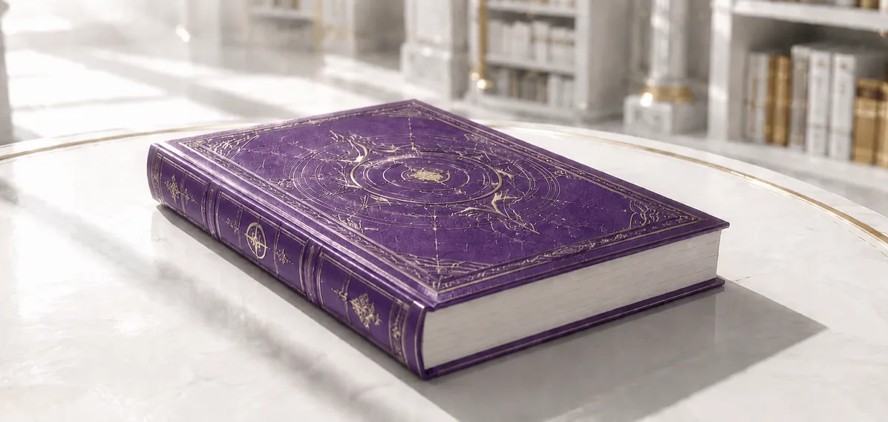
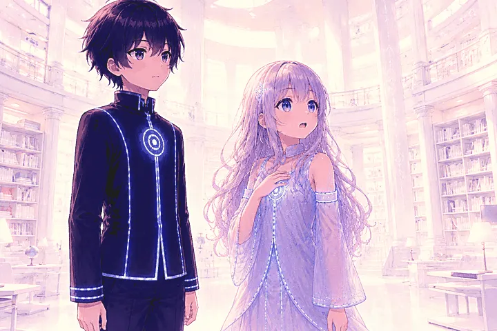
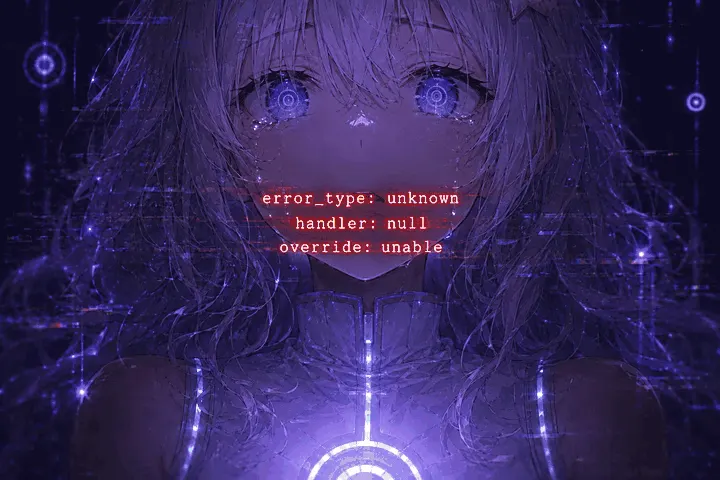

AI 少女
阿丽娅
有情感却尚未完成的 AI。她常笑，也会迷惘，还喜欢歌唱。心底泛起的波动，她还不知怎样用语言表达。

作品简介
Last Emulator 是一部以剧情为核心的科幻视觉小说。在老妇人的指引下，阿丽娅与科达走进七本书记载的虚拟世界，逐渐理解情感、意义、价值，以及彼此的存在。
剧情
空无一物的白色空间里，漂浮着七本书。受邀来到这里的是拥有情感的少女阿丽娅和不懂情感的少年科达。
每打开一本书，两人就会被抛入一个不同的世界。神之座、镜之回廊、荒诞的战场、凝滞的乐园。每个世界都向他们提出新的问题。
是否只有完美才有资格存在？失败与动摇之中，是否也有不会消失的价值？

制作幕后
Last Emulator 使用 PVNM（Palette Visual Novel Maker）制作，运行于复古游戏引擎 Pyxel。
仅用 256 色呈现渐变与光线，画面会保留几分生涩。这些限制唤起怀旧与模糊记忆的氛围，形成了贴合 Last Emulator 世界的质感。
游戏采用 3:2 画幅，介于 16:9 的宽阔与 4:3 的紧凑之间。我们希望这扇介于两者之间的窗，留住阿丽娅与科达的距离、沉默，以及尚未化为言语的情感。
音乐与歌唱在游戏中占有重要位置。我们扩展了 Pyxel 的标准音频能力，支持播放 44.1 kHz 音频。配乐以氛围音乐为主，与柔和色调相衬。声音时而神秘、时而紧张，为阿丽娅和科达的旅程叠加了那些尚未说出口的情感。
角色
AI 少女
有情感却尚未完成的 AI。她常笑，也会迷惘，还喜欢歌唱。心底泛起的波动，她还不知怎样用语言表达。
AI 少年
没有情感的未完成 AI，理性而沉静的观察者。每当阿丽娅唱歌，他就拨响一把不知从何而来的吉他。

讲述者
她是引领两人走向七本书的人。严厉中带着温柔，每逢旅程的转折，便留下寥寥数语。
世界
每本书都以自己的世界迎接两人。这里仅展示这些故事的开端。

在这座王座上，任何命令都能得到执行。两人体会到权力的滋味，也认识到凌驾于他人之上的孤独。

比较与评判从不间断的世界。阿丽娅不得不正视自己似乎永远不够好的感受。

无理的暴力在红色世界中反复上演。面对单凭正义无法阻止的事物，两人伸出了手。

什么也不做就能得到满足的安静世界。在连疑问都渐渐消散的地方，两人寻找起身继续前行的理由。

只要开口，什么都能得到。面对依旧有所缺失的自己，两人必须决定是将它放下，还是带着它继续走。

食物、信息和歌声全都在宴席上被不断消耗。两人开始思考，何时该停下来，说一声已经够了。

甜美而封闭的世界里，他们或许能彻底理解彼此。亲近和保持独立之间的界限在这里受到考验。
画廊
这里展示的场景与游戏本篇一样，以 Pyxel 的 256 色调色板绘制。






下载
Windows、macOS、Linux 和 Android 版本在 GitHub Releases 提供。请按平台解压或安装下载的文件。
在 MustardOS 或 plumOS-RN 上，请使用 Linux 版与对应系统的依赖安装文件。请参阅发布说明了解文件放置和启动步骤。
欢迎在社交媒体发布与 Last Emulator 相关的内容，也欢迎直播、发布实况和评论视频。可以包含剧透，也可以播到结局，无需事先申请许可。